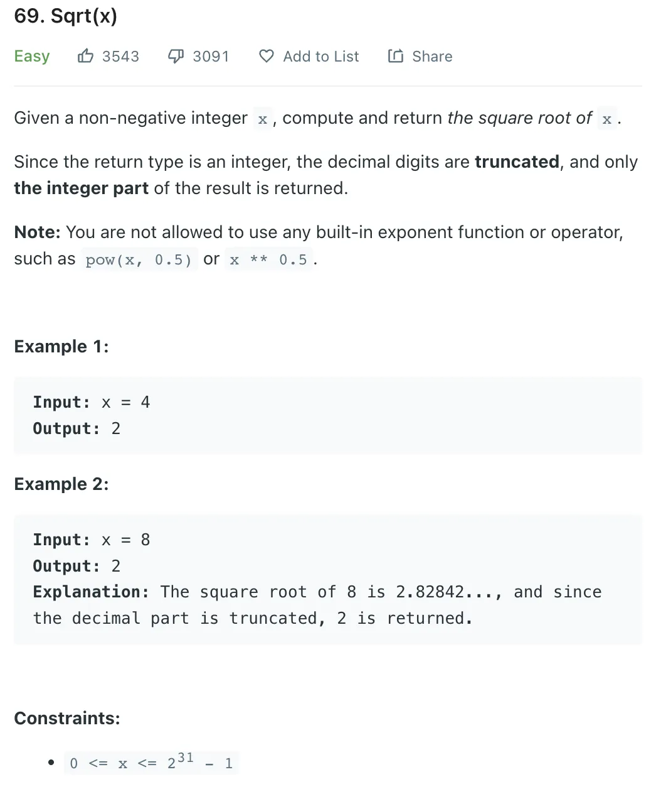

69. Sqrt(x)
考過的公司：Asked by: Bytedance, tiktok
Question

✍🏽 My Solution
Solution #2 [王爭-二分查找]
class Solution {
// 把邏輯都列出來，幫助思考，清晰很多
public int mySqrt(int x) {
int low = 0;
int high = x/2+1;
while (low <= high) {
int mid = low + (high-low)/2;
long square = (long)mid*mid;
// 命中
if (square <= x) {
long squareNext = ((long)mid+1)*(mid+1);
if (squareNext <= x) { // 偽命中
low = mid + 1;
} else {
return mid;
}
// 不命中
} else { // a[mid] > target
high = mid - 1;
}
}
return -1;
}
}
Explanation (in my words)
- How does their solution work?
- 查找最後一個小於等於x的數
Solution #1 [technique]
Runtime: 3 ms, faster than 30.90% of Java online submissions for Sqrt(x).
Memory Usage: 41.8 MB, less than 19.91% of Java online submissions for Sqrt(x).
class Solution {
public int mySqrt(int x) {
long low = 0;
long high = x/2+1;
while (low <= high) {
long mid = low+(high-low)/2;
if (mid * mid == x) {
return (int)mid;
} else if (mid * mid > x) {
high = mid - 1;
} else {
low = mid + 1;
}
}
return (int)high;
}
}